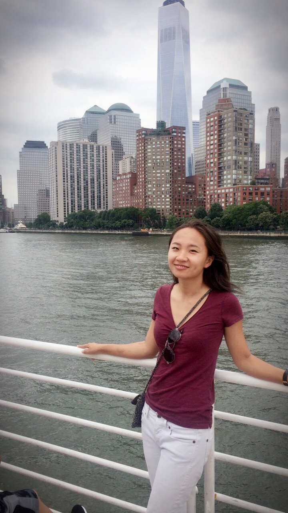

Discover the majesty of the Statue of Liberty and the history of Ellis Island on this engaging walking tour. With convenient priority boarding on the ferry, enjoy quick access to the Statue of Liberty and take an informative stroll around these historic sites with your expert guide.
the Statue of Liberty
fig3: Me
Boston
Right in the historic heart of Boston, Faneuil Hall Marketplace delights visitors with its lively atmosphere, street performers, specialty shops and pushcarts, and delicious ethnic food in the Quincy Market Colonnade. Shop and dine here to your heart's content with special VIP perks and savings.
Enjoy discounted parking and pick up your welcome packet, filled with shopping incentives, area information, a shopping directory, and a souvenir gift. With a USD 25 gift card and a Faneuil Hall Marketplace tote bag to carry your purchases, you're ready to hit this vibrant area's 75 different shops. Check out the wares at retailers like Origins, Nine West, Urban Outfitters, Victoria's Secret, and the Cheers Gift Shop. Special perks as you shop include a set of luggage tags from Samsonite—perfect for the visiting traveler.
Quincy Market
New England is world famous for seafood, and it is said that we boast the freshest, and most skillfully prepared seafood dishes on the planet. ... Mainly served alongside fries or potato chips, lobster rolls are a Boston staple, and a New England summertime classic.
Lobster!
Browse the engaging exhibits and galleries on display at Boston's Museum of Fine Arts with an art-historian guide. Gain insight into the institution's remarkable collections of Baroque, Renaissance, and American art and enjoy discussions that delve into the social and political inspirations for many of the museum's celebrated works.
Museum of Fine Arts
Distric of Columbia
Leave New York City early and head south through New Jersey, Delaware, and Maryland. By noon, reach Washington, D.C. and visit the Arlington National Cemetery to see where President John F. Kennedy is buried. Admire the enormous Lincoln Memorial, carved out of 28 blocks of white Georgia marble, and the Vietnam War Memorial, a long wall which chronologically lists the names of more than 58,000 Americans who gave their lives in service to their country.
White House
Get to know Washington DC through at night its collection of iconic outdoor monuments on this small group tour welcoming up to 10 guests. We’ll explore the city after sunset, when the buildings are illuminated brilliantly. Spend 2.5 hours browsing the most important national memorials of the United States capital and understand their place in the country’s history.